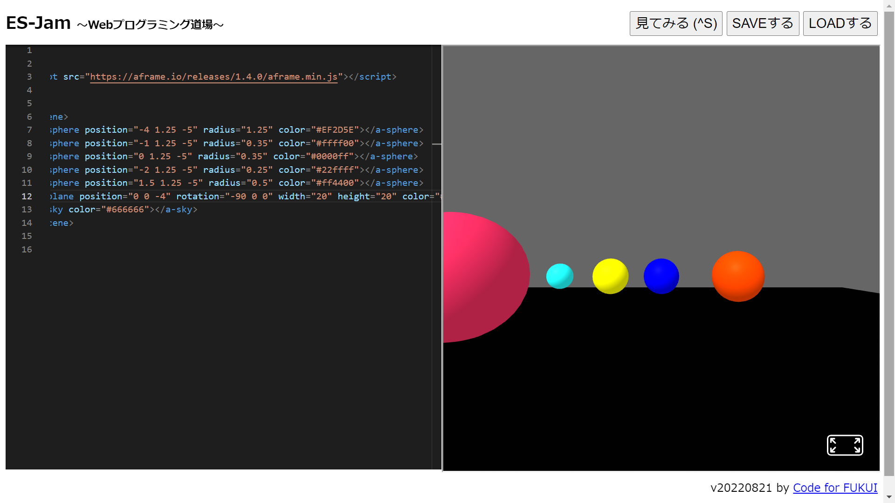

3-1 JavaScript体験：VR空間を作る

自作した３次元空間
1.内容
JavaScriptを用いて仮想空間を作成した。
"script scr"を用いることで本来のJavaScriptには存在しないコードを使用できる。
また、このプログラムではオブジェクトをX軸,Y軸,Z軸で指定している。
地球上でいえば経度,緯度,標高で位置を示しているようなものだろう。
2.感想
X軸,Y軸,Z軸の概念はどれがどの軸かが瞬時に判別できなかったので、慣れで判別できるようにしたい。
"script scr"を用いることでJavaScriptがさらに拡張できるということに驚いた。
もはや、ウェブ上でできることなら何でもできるのではないだろうか。